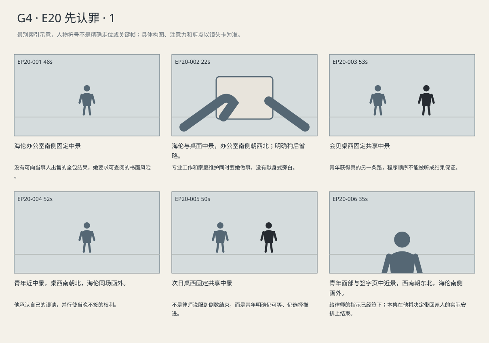

他自己发现把申请误读成协议，当天不签；隔夜阅读后，在仍可再会见一次的机会前亲自指示推进。
剧本Markdown · 全部独立复制稿 · 英语字幕 · 中文字幕
详细剧本
E20-SC01 · 夜·认罪前一周 · HELEN-OFFICE
海伦办公室西窗映着台灯，中央桌上外卖仍封着。她坐南，手机开免提放在蓝夹旁；两个案件标签分在北墙不同位置。她问完，把笔停在一句尚未写完的条件后面。
海伦（使用英语，停笔等两件事分别得到答复）：Before I talk to him, are we agreeing on a sentence? Anything from New York?
中文对照：我跟他谈之前先问清楚：刑期谈定了吗？纽约那边呢？
联邦检察官电话声音（使用英语，逐项说清没有承诺的地方）：No cap on the sentence. No deal with New York. He pleads to what's left; sentencing is up to the judge.
中文对照：刑期没有上限，跟纽约也没有协议。他认剩下的罪，怎么判由法官决定。
海伦划掉纸上原先留给整体协议的空栏，没有去碰外卖。
海伦（使用英语，要求书面）：Put that in writing. All of it.
中文对照：请全部写下来。
她将桌面便签上的口头条件移到一旁，工作邮箱仍未收到对应文件。
海伦（使用英语，确认交付渠道与当事人知情）：Send it to my work address, please. I need him to read the same thing I have.
中文对照：发我工作邮箱。他得能读到和我一样的内容。
她结束电话，等工作邮箱收到书面立场，打印后把它压在联邦案标签下。手机显示家人未接来电，她换到私人语音信箱。
海伦（使用英语，家常语气，边拆筷子边叮嘱）：I can't make Sunday lunch. If the boiler guy comes, get the invoice before you pay. Call me back.
中文对照：周日午饭我去不了了。修锅炉的人来了，先拿到账单再付钱。给我回个电话。
留言发出，海伦把拆好的筷子掰开，只吃了两口便把那份书面立场装入蓝夹。
E20-SC02 · 日·次日 · VISIT
次日会见室，路易吉坐北侧。海伦在南侧把联邦与纽约案卷分开，给他的那张说明在桌中，尚未签字的程序确认页留在她手边。蓝夹在桌西，窗在东。
海伦（使用英语，先把联邦说明放下，再指另一份文件）：You plead guilty to the federal charges. Then we ask New York to drop its case.
中文对照：你先对联邦指控认罪。然后，我们申请让纽约撤案。
路易吉用手挡住她将要翻下一页的动作。
路易吉（使用英语，盯住申请一词追问）：Ask? You can't make them?
中文对照：申请？不能让他们必须撤？
海伦（使用英语，翻页的手收回，回答最要紧的部分）：No. They'll argue an exception applies. The judge could agree with them.
中文对照：不能。他们会说这案子符合例外，法官可能支持他们。
路易吉把纽约文件拉到联邦说明旁，想把两页上的结果接起来。海伦没有顺势把笔递给他。
路易吉（使用英语，不接受仅按顺序办的理由）：Then why do this first?
中文对照：那为什么先做这一步？
海伦（使用英语，说明程序路径与结果的不确定）：Because that's the sequence for this motion. Not because we know it'll work.
中文对照：因为这份申请要按这个顺序提，不是因为我们知道一定能成。
路易吉（使用英语，确认另一条路确实还在）：And if I don't plead?
中文对照：我要是不认呢？
海伦（使用英语，把签字页收回自己一侧）：We prepare for trial. I'm not asking you to decide in this room.
中文对照：那我们就准备审判。我没要求你在这间屋里决定。
他重新读申请栏，手还停在纸上，没有拿笔。
他把说明转回正面，找到自己最关心的承认后果。
路易吉（使用英语，找到那一行后才抬头确认）：So they could use my answers against me.
中文对照：那他们能拿我说的话来对付我。
海伦（使用英语，直接说最坏结果，不替他作决定）：Yes. And even if New York drops the case, the federal judge could still give you life.
中文对照：能。就算纽约撤了，联邦法官仍可能判你终身监禁。
青年把说明转向她，在申请纽约撤案的段落停住；海伦不急着划线纠正。他沿着那一行重新读过。
路易吉（使用英语，承认先前自己看成了保证）：I thought the paper said something else.
中文对照：我以为纸上不是这个意思。
海伦（使用英语，让他找到误读处，不替他回答）：Show me.
中文对照：指给我看。
路易吉（使用英语，读到那个词后自己改口）：No. I read 'request' as 'agreement.'
中文对照：不是。我把“申请”看成“协议”了。
他把那行圈起，圈的是自己的疑问，不是一个已经获得的承诺。
海伦不再继续往下讲。路易吉看了一会儿，将说明抽到自己一侧，把签字页推回去。
路易吉（使用英语，抽走说明，把签字页推回去）：Leave this with me. I'm not signing yet.
中文对照：这份留给我。我现在不签。
海伦（使用英语，尊重考虑）：Fine. Tomorrow, same time.
中文对照：好，明天还是这个时间。
海伦把笔收回蓝夹。路易吉把说明对折，夹入自己的会见资料；没有人在他旁边等一个答案。
E20-SC03 · 日·再下一日 · VISIT
再下一日，海伦从会见室南门进来时，北侧的路易吉已把折过的说明铺平。他指着一行重读过的字，等她坐稳才说。
路易吉（使用英语，等她坐好后先开口，不等她再劝）：I read it twice. I want to plead guilty. Both federal counts.
中文对照：我读了两遍。我想认罪，两项联邦指控都认。
海伦没有立刻递笔。
海伦（使用英语，先确认理解，不立刻递笔）：Okay. What haven't we been promised?
中文对照：好。哪些事还没有保证？
路易吉（使用英语，看着说明逐项回答，不背法条）：My sentence. New York dropping its case. Getting out.
中文对照：判多久，纽约撤案，还有能不能出去。
海伦把未签页留在自己手边，给他时间看清日期。青年把昨晚的说明摊平，抬眼答她。
海伦（使用英语，留一次实际可撤回的机会）：Do you want me to ask for another meeting before I notify them?
中文对照：要不要我通知他们之前，再安排一次会见？
路易吉（使用英语，自己区分给律师指示与庭上认罪）：No. Tell them I want to plead. I know the judge still has to ask me.
中文对照：不用。告诉他们我想认罪。我知道法官还得亲自问我。
她将给律师的程序指示确认页放在桌中。路易吉自己拿笔，签下姓名与日期，笔放回中间。
路易吉（使用英语，签完才交代，不抬头作宣告）：It's my decision. When you talk to the press, don't call it a win.
中文对照：这是我自己决定的。你跟媒体说的时候，别说成赢了。
海伦（使用英语，把回看措辞记在签页后）：You can read it before it goes out.
中文对照：发出去之前，先给你看。
海伦把确认页收入蓝夹，留下副本。他扶住她将要合起的夹子，问另一件事。
路易吉（使用英语，扶住夹边，终于问到家里）：Can I call my mom before the hearing? I need to tell her myself.
中文对照：开庭前能让我给我妈打个电话吗？我得亲口跟她说。
海伦（使用英语，不许诺控制之外）：I'll request the call.
中文对照：我来申请通话。
海伦在日历上记下通话申请。路易吉把自己的确认副本和折过的说明放在一起，等她收好，才松开夹边。
景别索引板
简化人物符号仅用于检索景别。完整镜头卡、信息变化及相邻剪点另页阅读。

逐镜复制稿
EP20-001 · 制作号E20-SH001 · 48s · 海伦办公室南侧固定中景
没有可向当事人出售的全包结果，她要求可查阅的书面风险。
成片采用 [0,48) 秒；2个生成候选，技术边界不是剪点。候选未生成。
成片镜 E20-SH001 共48秒；下面2个独立生成候选共同服务本镜。技术接续不等于成片剪点，不能将本文件整段提交为一次任务。先制作并核验连续表演、机位和声线，再决定延长或覆盖方案；当前无实际媒体。
【E20-SH001-G01 · 本镜采用 0—24 秒】
16:9横屏，当代美国真人现实悬疑。环境低至中等饱和，人物肤色保持真实差异与自然纹理；深黑保留衣料和道具分离，白纸与白领高光柔和有层次。冷暖来自本镜已有物理光源，不统一青橙、不磨皮、不以整体欠曝制造悬疑。遵循本镜机位、表演与焦点，不擅自追加缓推、急变焦或摇晃。
场次风格：本场时段：夜·认罪前一周。本场夜间/凌晨，空间母稿的门窗位置保持，但其中白天窗光说明不作当前光源；以本场正文已明确的工作灯、台灯或既有公共照明为主，窗外暗部保留环境层次。 本地光色与材质：西窗与办公室现有灯具依时段工作，旧木、蓝夹、白纸和衣料不过度去色。共享桌面保留不同人手边的材料，文书细节只在改变判断时突出。
总生成长度26秒，为中间24秒采用区间保留开头和结尾各1秒自然余量，不增添剧情。
人物：
以下为连续镜的身份库；人物是否已入画、离场及持物只依本段起态与动作，不能把整镜所有角色同时塞入本段。
海伦，55岁白人女性，短灰金发、窄长脸、深灰西装、灰蓝衬衫、银色腕表，蓝色案卷夹。低中音、短句准确，保留等对方回答的停顿。
本镜画外继承，声源/人物不入画：联邦检察官，42岁白人女性，深灰西装。
声源与背景限定：联邦检察官是电话对端，只留线路声，本镜不说额外英语，不出现在海伦办公室。
环境与光源：门南，西窗，中央长桌，北墙证据板，东侧文件柜；海伦蓝夹在桌西侧，患者代理凯文不得被写成同一律师。
景别/机位：海伦办公室南侧固定中景
构图：沿用该成片镜既定机位和场景方向；当前站位、朝向与持物：海伦笔悬空，手机免提，外卖封着。
起始画面：海伦笔悬空，手机免提，外卖封着。
事件与表演：她问刑期与纽约，等对端逐项否定，手停在空栏。 同一成片镜、同一相机路径与速度；接续上一段已发生动作，不重做开头。
注意力变化：海伦笔悬空，手机免提，外卖封着。 → 她问刑期与纽约，等对端逐项否定，手停在空栏。 角色与物件停留在这一步的连续状态，机位及照明不重置。
摄影机：海伦办公室南侧固定中景，免提手机在桌、两案标签分开；对端仅为电话声，不生成检察官现场。
焦点：仅响应本段当前动作与受话关系；不预先转向尚未发生的后段事件。
结束状态：她问刑期与纽约，等对端逐项否定，手停在空栏。 角色与物件停留在这一步的连续状态，机位及照明不重置。
声音：<办公室低位通风与窗外远车；当前空间连续环境底声；拟音只随本段真实动作与物件接触发生，已完成事件不重演；可辨英语仅为下列本段对白。>
(无背景音乐；先以表演、对白、真实环境声成立，禁止在技术段接缝加音乐遮掩。)
准确对白按顺序：
海伦向联邦检察官电话声音，停笔等两件事分别得到答复，只使用英语说一次：{Before I talk to him, are we agreeing on a sentence? Anything from New York?}
联邦检察官电话声音向海伦，逐项说清没有承诺的地方，只使用英语说一次：{No cap on the sentence. No deal with New York. He pleads to what's left; sentencing is up to the judge.}
画外声音归属：联邦检察官电话声音仅由本镜明确的电话/屏幕/画外位置传出，声源本人不凭空出现在房间内。
只说列出的英语原句；导演说明不发声，不说中文译文，不额外加旁白或对白。手机/公文/字幕均由后期叠加，生成画面不排字。单镜连续，不加入内部切镜；前后保持身份、服装、门窗、物件与接触状态一致。
【E20-SH001-G02 · 本镜采用 24—48 秒】
16:9横屏，当代美国真人现实悬疑。环境低至中等饱和，人物肤色保持真实差异与自然纹理；深黑保留衣料和道具分离，白纸与白领高光柔和有层次。冷暖来自本镜已有物理光源，不统一青橙、不磨皮、不以整体欠曝制造悬疑。遵循本镜机位、表演与焦点，不擅自追加缓推、急变焦或摇晃。
场次风格：本场时段：夜·认罪前一周。本场夜间/凌晨，空间母稿的门窗位置保持，但其中白天窗光说明不作当前光源；以本场正文已明确的工作灯、台灯或既有公共照明为主，窗外暗部保留环境层次。 本地光色与材质：西窗与办公室现有灯具依时段工作，旧木、蓝夹、白纸和衣料不过度去色。共享桌面保留不同人手边的材料，文书细节只在改变判断时突出。
总生成长度26秒，为中间24秒采用区间保留开头和结尾各1秒自然余量，不增添剧情。
人物：
以下为连续镜的身份库；人物是否已入画、离场及持物只依本段起态与动作，不能把整镜所有角色同时塞入本段。
海伦，55岁白人女性，短灰金发、窄长脸、深灰西装、灰蓝衬衫、银色腕表，蓝色案卷夹。低中音、短句准确，保留等对方回答的停顿。
本镜画外继承，声源/人物不入画：联邦检察官，42岁白人女性，深灰西装。
声源与背景限定：联邦检察官是电话对端，只留线路声，本镜不说额外英语，不出现在海伦办公室。
环境与光源：门南，西窗，中央长桌，北墙证据板，东侧文件柜；海伦蓝夹在桌西侧，患者代理凯文不得被写成同一律师。
景别/机位：海伦办公室南侧固定中景
构图：沿用该成片镜既定机位和场景方向；当前站位、朝向与持物：她问刑期与纽约，等对端逐项否定，手停在空栏。 角色与物件停留在这一步的连续状态，机位及照明不重置。
起始画面：她问刑期与纽约，等对端逐项否定，手停在空栏。 角色与物件停留在这一步的连续状态，机位及照明不重置。
事件与表演：她划去空栏、要求完整书面并指定工作邮箱，然后挂断，等待另一个时间点实际收件。 同一成片镜、同一相机路径与速度；接续上一段已发生动作，不重做开头。
注意力变化：她问刑期与纽约，等对端逐项否定，手停在空栏。 角色与物件停留在这一步的连续状态，机位及照明不重置。 → 她划去空栏、要求完整书面并指定工作邮箱，然后挂断，等待另一个时间点实际收件。 角色与物件停留在这一步的连续状态，机位及照明不重置。
摄影机：海伦办公室南侧固定中景，免提手机在桌、两案标签分开；对端仅为电话声，不生成检察官现场。
焦点：仅响应本段当前动作与受话关系；不预先转向尚未发生的后段事件。
结束状态：她划去空栏、要求完整书面并指定工作邮箱，然后挂断，等待另一个时间点实际收件。 角色与物件停留在这一步的连续状态，机位及照明不重置。
声音：<办公室低位通风与窗外远车；当前空间连续环境底声；拟音只随本段真实动作与物件接触发生，已完成事件不重演；可辨英语仅为下列本段对白。>
(无背景音乐；先以表演、对白、真实环境声成立，禁止在技术段接缝加音乐遮掩。)
准确对白按顺序：
海伦向联邦检察官电话声音，要求书面，只使用英语说一次：{Put that in writing. All of it.}
海伦向联邦检察官电话声音，确认交付渠道与当事人知情，只使用英语说一次：{Send it to my work address, please. I need him to read the same thing I have.}
只说列出的英语原句；导演说明不发声，不说中文译文，不额外加旁白或对白。手机/公文/字幕均由后期叠加，生成画面不排字。单镜连续，不加入内部切镜；前后保持身份、服装、门窗、物件与接触状态一致。静帧起态备稿
16:9横屏，当代美国真人现实悬疑。环境低至中等饱和，人物肤色保持真实差异与自然纹理；深黑保留衣料和道具分离，白纸与白领高光柔和有层次。冷暖来自本镜已有物理光源，不统一青橙、不磨皮、不以整体欠曝制造悬疑。遵循本镜机位、表演与焦点，不擅自追加缓推、急变焦或摇晃。
场次风格：本场时段：夜·认罪前一周。本场夜间/凌晨，空间母稿的门窗位置保持，但其中白天窗光说明不作当前光源；以本场正文已明确的工作灯、台灯或既有公共照明为主，窗外暗部保留环境层次。 本地光色与材质：西窗与办公室现有灯具依时段工作，旧木、蓝夹、白纸和衣料不过度去色。共享桌面保留不同人手边的材料，文书细节只在改变判断时突出。
海伦，55岁白人女性，短灰金发、窄长脸、深灰西装、灰蓝衬衫、银色腕表，蓝色案卷夹。低中音、短句准确，保留等对方回答的停顿。
门南，西窗，中央长桌，北墙证据板，东侧文件柜；海伦蓝夹在桌西侧，患者代理凯文不得被写成同一律师。
海伦办公室南侧固定中景；起态构图：海伦笔悬空，手机免提，外卖封着。。空间方位按上列环境，人物只处于起态；本镜后续调度不出现在静帧。此图不描画尚未发生的动作，不生成字幕和公文长字。
| 英语原句 | 中文对照 | 预定窗口 |
|---|
| 海伦：Before I talk to him, are we agreeing on a sentence? Anything from New York? | 我跟他谈之前先问清楚：刑期谈定了吗？纽约那边呢？ | 0.8–8.9s |
| 联邦检察官电话声音：No cap on the sentence. No deal with New York. He pleads to what's left; sentencing is up to the judge. | 刑期没有上限，跟纽约也没有协议。他认剩下的罪，怎么判由法官决定。 | 9.55–20.8s |
| 海伦：Put that in writing. All of it. | 请全部写下来。 | 24.8–28.71s |
| 海伦：Send it to my work address, please. I need him to read the same thing I have. | 发我工作邮箱。他得能读到和我一样的内容。 | 29.36–38.51s |
观众信息：律师可能替当事人谈得隐性保证。 → 没有可向当事人出售的全包结果，她要求可查阅的书面风险。
切点：成片剪点由本镜结束后注意与任务发生变化决定：没有可向当事人出售的全包结果，她要求可查阅的书面风险。 技术生成段边界不触发剪辑。
接口：下一成片镜 E20-SH004。同场时承接本镜已完成动作，不重复表演；跨场依剧本时间和空间建立。
EP20-002 · 制作号E20-SH004 · 22s · 海伦与桌面中景，办公室南侧朝西北；明确稍后省略。
专业工作和家庭维护同时要她做事，没有献身式旁白。
成片采用 [48,70) 秒；1个生成候选，技术边界不是剪点。候选未生成。
16:9横屏，当代美国真人现实悬疑。环境低至中等饱和，人物肤色保持真实差异与自然纹理；深黑保留衣料和道具分离，白纸与白领高光柔和有层次。冷暖来自本镜已有物理光源，不统一青橙、不磨皮、不以整体欠曝制造悬疑。遵循本镜机位、表演与焦点，不擅自追加缓推、急变焦或摇晃。
场次风格：本场时段：夜·认罪前一周。本场夜间/凌晨，空间母稿的门窗位置保持，但其中白天窗光说明不作当前光源；以本场正文已明确的工作灯、台灯或既有公共照明为主，窗外暗部保留环境层次。 本地光色与材质：西窗与办公室现有灯具依时段工作，旧木、蓝夹、白纸和衣料不过度去色。共享桌面保留不同人手边的材料，文书细节只在改变判断时突出。
总生成长度24秒，为中间22秒采用区间保留开头和结尾各1秒自然余量，不增添剧情。
人物：
海伦，55岁白人女性，短灰金发、窄长脸、深灰西装、灰蓝衬衫、银色腕表，蓝色案卷夹。低中音、短句准确，保留等对方回答的停顿。
声源与背景限定：海伦给家人语音信箱留言，没有对端人物、没有回答。
环境与光源：门南，西窗，中央长桌，北墙证据板，东侧文件柜；海伦蓝夹在桌西侧，患者代理凯文不得被写成同一律师。
景别/机位：海伦与桌面中景，办公室南侧朝西北；明确稍后省略。
构图：海伦办公室南门、西窗、中央桌、北证据板、东柜；夜间暖台灯，窗外冷蓝，海伦坐南，蓝夹桌西。明确稍后收件省略后，南侧固定海伦中景；已打印立场与外卖同桌，西窗映暖台灯。 与前镜同轴但不同时间，手在家中维修留言、筷子和真实打印文件之间工作；不假定书面即时到达。
起始画面：私人未接来电亮起，书面页已取到。
事件与表演：书面立场已打印，她先核与电话条件一致，再给家人留锅炉账单和周日午饭消息，拆筷吃两口，把文件装夹。
注意力变化：她一直替别人精确安排。 → 专业工作和家庭维护同时要她做事，没有献身式旁白。
摄影机：明确稍后收件省略后，南侧固定海伦中景；已打印立场与外卖同桌，西窗映暖台灯。
焦点：与前镜同轴但不同时间，手在家中维修留言、筷子和真实打印文件之间工作；不假定书面即时到达。
结束状态：专业工作和家庭维护同时要她做事，没有献身式旁白。；具体动作终态：书面立场已打印，她先核与电话条件一致，再给家人留锅炉账单和周日午饭消息，拆筷吃两口，把文件装夹。
声音：<留言提示、筷子包装、纸页入夹；无对端回复。；只保留本镜对白表所列可辨英语，原场内画外、电话、直播声源关系保持；不增配解释旁白。>
(无背景音乐；先以表演、对白、真实环境声成立，禁止在技术段接缝加音乐遮掩。)
准确对白按顺序：
海伦向家人语音信箱，家常语气，边拆筷子边叮嘱，只使用英语说一次：{I can't make Sunday lunch. If the boiler guy comes, get the invoice before you pay. Call me back.}
只说列出的英语原句；导演说明不发声，不说中文译文，不额外加旁白或对白。手机/公文/字幕均由后期叠加，生成画面不排字。单镜连续，不加入内部切镜；前后保持身份、服装、门窗、物件与接触状态一致。静帧起态备稿
16:9横屏，当代美国真人现实悬疑。环境低至中等饱和，人物肤色保持真实差异与自然纹理；深黑保留衣料和道具分离，白纸与白领高光柔和有层次。冷暖来自本镜已有物理光源，不统一青橙、不磨皮、不以整体欠曝制造悬疑。遵循本镜机位、表演与焦点，不擅自追加缓推、急变焦或摇晃。
场次风格：本场时段：夜·认罪前一周。本场夜间/凌晨，空间母稿的门窗位置保持，但其中白天窗光说明不作当前光源；以本场正文已明确的工作灯、台灯或既有公共照明为主，窗外暗部保留环境层次。 本地光色与材质：西窗与办公室现有灯具依时段工作，旧木、蓝夹、白纸和衣料不过度去色。共享桌面保留不同人手边的材料，文书细节只在改变判断时突出。
海伦，55岁白人女性，短灰金发、窄长脸、深灰西装、灰蓝衬衫、银色腕表，蓝色案卷夹。低中音、短句准确，保留等对方回答的停顿。
门南，西窗，中央长桌，北墙证据板，东侧文件柜；海伦蓝夹在桌西侧，患者代理凯文不得被写成同一律师。
海伦与桌面中景，办公室南侧朝西北；明确稍后省略。；起态构图：私人未接来电亮起，书面页已取到。。空间方位按上列环境，人物只处于起态；本镜后续调度不出现在静帧。此图不描画尚未发生的动作，不生成字幕和公文长字。
| 英语原句 | 中文对照 | 预定窗口 |
|---|
| 海伦：I can't make Sunday lunch. If the boiler guy comes, get the invoice before you pay. Call me back. | 周日午饭我去不了了。修锅炉的人来了，先拿到账单再付钱。给我回个电话。 | 0.8–11.0s |
观众信息：她一直替别人精确安排。 → 专业工作和家庭维护同时要她做事，没有献身式旁白。
切点：成片剪点由本镜结束后注意与任务发生变化决定：专业工作和家庭维护同时要她做事，没有献身式旁白。 技术生成段边界不触发剪辑。
接口：本场结果成立后切入 E20-SC02（VISIT，日·次日）；以新场开头建立空间和人物持物，环境声按新场接入。
EP20-003 · 制作号E20-SH005 · 53s · 会见桌西固定共享中景
青年获得真的另一条路，程序顺序不能被听成结果保证。
成片采用 [70,123) 秒；3个生成候选，技术边界不是剪点。候选未生成。
成片镜 E20-SH005 共53秒；下面3个独立生成候选共同服务本镜。技术接续不等于成片剪点，不能将本文件整段提交为一次任务。先制作并核验连续表演、机位和声线，再决定延长或覆盖方案；当前无实际媒体。
【E20-SH005-G01 · 本镜采用 0—18 秒】
16:9横屏，当代美国真人现实悬疑。环境低至中等饱和，人物肤色保持真实差异与自然纹理；深黑保留衣料和道具分离，白纸与白领高光柔和有层次。冷暖来自本镜已有物理光源，不统一青橙、不磨皮、不以整体欠曝制造悬疑。遵循本镜机位、表演与焦点，不擅自追加缓推、急变焦或摇晃。
场次风格：本场时段：日·次日。本场光源启用及强度以明确时段和正文为准，同场反打继承光源方向；不因景别变化任意换色温。 本地光色与材质：中性略冷顶灯为基础，东窄窗仅按时段提供环境补光；灰衣、肤色、金属桌分别可辨。桌沿和空位表达未得到的答复，不新增隔断玻璃。
总生成长度20秒，为中间18秒采用区间保留开头和结尾各1秒自然余量，不增添剧情。
人物：
以下为连续镜的身份库；人物是否已入画、离场及持物只依本段起态与动作，不能把整镜所有角色同时塞入本段。
海伦，55岁白人女性，短灰金发、窄长脸、深灰西装、灰蓝衬衫、银色腕表，蓝色案卷夹。低中音、短句准确，保留等对方回答的停顿。
路易吉，26岁意裔男性，深棕短卷发、浓眉、棕眼、较长椭圆脸、清楚下颌、精瘦体态；浅灰长袖囚服、炭灰裤；会见时腕部自由，固定桌两人同坐，无隔断玻璃。声音中低、清楚克制。
环境与光源：羁押会见室；门南、固定桌中央、路易吉坐北侧朝南、海伦坐南侧朝北、玻璃窄窗东、警员在南门外。中性顶灯略偏冷。二人同桌无隔断玻璃。左右反打不移动门和窗。
景别/机位：会见桌西固定共享中景
构图：沿用该成片镜既定机位和场景方向；当前站位、朝向与持物：青年北侧手空，海伦持说明与未签页。
起始画面：青年北侧手空，海伦持说明与未签页。
事件与表演：她放联邦说明和纽约文件，青年在她翻页前用手挡住，问申请是否必须被接受。 同一成片镜、同一相机路径与速度；接续上一段已发生动作，不重做开头。
注意力变化：青年北侧手空，海伦持说明与未签页。 → 她放联邦说明和纽约文件，青年在她翻页前用手挡住，问申请是否必须被接受。 角色与物件停留在这一步的连续状态，机位及照明不重置。
摄影机：会见桌西固定共享中景，联邦说明在中，纽约页在旁，未签页南侧；青年拦翻页动作清楚，不反打躲开律师。
焦点：仅响应本段当前动作与受话关系；不预先转向尚未发生的后段事件。
结束状态：她放联邦说明和纽约文件，青年在她翻页前用手挡住，问申请是否必须被接受。 角色与物件停留在这一步的连续状态，机位及照明不重置。
声音：<会见室持续通风，空房混响克制；当前空间连续环境底声；拟音只随本段真实动作与物件接触发生，已完成事件不重演；可辨英语仅为下列本段对白。>
(无背景音乐；先以表演、对白、真实环境声成立，禁止在技术段接缝加音乐遮掩。)
准确对白按顺序：
海伦向路易吉，先把联邦说明放下，再指另一份文件，只使用英语说一次：{You plead guilty to the federal charges. Then we ask New York to drop its case.}
路易吉向海伦，盯住申请一词追问，只使用英语说一次：{Ask? You can't make them?}
只说列出的英语原句；导演说明不发声，不说中文译文，不额外加旁白或对白。手机/公文/字幕均由后期叠加，生成画面不排字。单镜连续，不加入内部切镜；前后保持身份、服装、门窗、物件与接触状态一致。
【E20-SH005-G02 · 本镜采用 18—36 秒】
16:9横屏，当代美国真人现实悬疑。环境低至中等饱和，人物肤色保持真实差异与自然纹理；深黑保留衣料和道具分离，白纸与白领高光柔和有层次。冷暖来自本镜已有物理光源，不统一青橙、不磨皮、不以整体欠曝制造悬疑。遵循本镜机位、表演与焦点，不擅自追加缓推、急变焦或摇晃。
场次风格：本场时段：日·次日。本场光源启用及强度以明确时段和正文为准，同场反打继承光源方向；不因景别变化任意换色温。 本地光色与材质：中性略冷顶灯为基础，东窄窗仅按时段提供环境补光；灰衣、肤色、金属桌分别可辨。桌沿和空位表达未得到的答复，不新增隔断玻璃。
总生成长度20秒，为中间18秒采用区间保留开头和结尾各1秒自然余量，不增添剧情。
人物：
以下为连续镜的身份库；人物是否已入画、离场及持物只依本段起态与动作，不能把整镜所有角色同时塞入本段。
海伦，55岁白人女性，短灰金发、窄长脸、深灰西装、灰蓝衬衫、银色腕表，蓝色案卷夹。低中音、短句准确，保留等对方回答的停顿。
路易吉，26岁意裔男性，深棕短卷发、浓眉、棕眼、较长椭圆脸、清楚下颌、精瘦体态；浅灰长袖囚服、炭灰裤；会见时腕部自由，固定桌两人同坐，无隔断玻璃。声音中低、清楚克制。
环境与光源：羁押会见室；门南、固定桌中央、路易吉坐北侧朝南、海伦坐南侧朝北、玻璃窄窗东、警员在南门外。中性顶灯略偏冷。二人同桌无隔断玻璃。左右反打不移动门和窗。
景别/机位：会见桌西固定共享中景
构图：沿用该成片镜既定机位和场景方向；当前站位、朝向与持物：她放联邦说明和纽约文件，青年在她翻页前用手挡住，问申请是否必须被接受。 角色与物件停留在这一步的连续状态，机位及照明不重置。
起始画面：她放联邦说明和纽约文件，青年在她翻页前用手挡住，问申请是否必须被接受。 角色与物件停留在这一步的连续状态，机位及照明不重置。
事件与表演：律师说明例外可能，青年追问为何先认；她把顺序和把握分开。 同一成片镜、同一相机路径与速度；接续上一段已发生动作，不重做开头。
注意力变化：她放联邦说明和纽约文件，青年在她翻页前用手挡住，问申请是否必须被接受。 角色与物件停留在这一步的连续状态，机位及照明不重置。 → 律师说明例外可能，青年追问为何先认；她把顺序和把握分开。 角色与物件停留在这一步的连续状态，机位及照明不重置。
摄影机：会见桌西固定共享中景，联邦说明在中，纽约页在旁，未签页南侧；青年拦翻页动作清楚，不反打躲开律师。
焦点：仅响应本段当前动作与受话关系；不预先转向尚未发生的后段事件。
结束状态：律师说明例外可能，青年追问为何先认；她把顺序和把握分开。 角色与物件停留在这一步的连续状态，机位及照明不重置。
声音：<会见室持续通风，空房混响克制；当前空间连续环境底声；拟音只随本段真实动作与物件接触发生，已完成事件不重演；可辨英语仅为下列本段对白。>
(无背景音乐；先以表演、对白、真实环境声成立，禁止在技术段接缝加音乐遮掩。)
准确对白按顺序：
海伦向路易吉，翻页的手收回，回答最要紧的部分，只使用英语说一次：{No. They'll argue an exception applies. The judge could agree with them.}
路易吉向海伦，不接受仅按顺序办的理由，只使用英语说一次：{Then why do this first?}
海伦向路易吉，说明程序路径与结果的不确定，只使用英语说一次：{Because that's the sequence for this motion. Not because we know it'll work.}
只说列出的英语原句；导演说明不发声，不说中文译文，不额外加旁白或对白。手机/公文/字幕均由后期叠加，生成画面不排字。单镜连续，不加入内部切镜；前后保持身份、服装、门窗、物件与接触状态一致。
【E20-SH005-G03 · 本镜采用 36—53 秒】
16:9横屏，当代美国真人现实悬疑。环境低至中等饱和，人物肤色保持真实差异与自然纹理；深黑保留衣料和道具分离，白纸与白领高光柔和有层次。冷暖来自本镜已有物理光源，不统一青橙、不磨皮、不以整体欠曝制造悬疑。遵循本镜机位、表演与焦点，不擅自追加缓推、急变焦或摇晃。
场次风格：本场时段：日·次日。本场光源启用及强度以明确时段和正文为准，同场反打继承光源方向；不因景别变化任意换色温。 本地光色与材质：中性略冷顶灯为基础，东窄窗仅按时段提供环境补光；灰衣、肤色、金属桌分别可辨。桌沿和空位表达未得到的答复，不新增隔断玻璃。
总生成长度19秒，为中间17秒采用区间保留开头和结尾各1秒自然余量，不增添剧情。
人物：
以下为连续镜的身份库；人物是否已入画、离场及持物只依本段起态与动作，不能把整镜所有角色同时塞入本段。
海伦，55岁白人女性，短灰金发、窄长脸、深灰西装、灰蓝衬衫、银色腕表，蓝色案卷夹。低中音、短句准确，保留等对方回答的停顿。
路易吉，26岁意裔男性，深棕短卷发、浓眉、棕眼、较长椭圆脸、清楚下颌、精瘦体态；浅灰长袖囚服、炭灰裤；会见时腕部自由，固定桌两人同坐，无隔断玻璃。声音中低、清楚克制。
环境与光源：羁押会见室；门南、固定桌中央、路易吉坐北侧朝南、海伦坐南侧朝北、玻璃窄窗东、警员在南门外。中性顶灯略偏冷。二人同桌无隔断玻璃。左右反打不移动门和窗。
景别/机位：会见桌西固定共享中景
构图：沿用该成片镜既定机位和场景方向；当前站位、朝向与持物：律师说明例外可能，青年追问为何先认；她把顺序和把握分开。 角色与物件停留在这一步的连续状态，机位及照明不重置。
起始画面：律师说明例外可能，青年追问为何先认；她把顺序和把握分开。 角色与物件停留在这一步的连续状态，机位及照明不重置。
事件与表演：青年问不认会怎样，律师明确准备审判、不要求当场决定，笔仍南侧。 同一成片镜、同一相机路径与速度；接续上一段已发生动作，不重做开头。
注意力变化：律师说明例外可能，青年追问为何先认；她把顺序和把握分开。 角色与物件停留在这一步的连续状态，机位及照明不重置。 → 青年问不认会怎样，律师明确准备审判、不要求当场决定，笔仍南侧。 角色与物件停留在这一步的连续状态，机位及照明不重置。
摄影机：会见桌西固定共享中景，联邦说明在中，纽约页在旁，未签页南侧；青年拦翻页动作清楚，不反打躲开律师。
焦点：仅响应本段当前动作与受话关系；不预先转向尚未发生的后段事件。
结束状态：青年问不认会怎样，律师明确准备审判、不要求当场决定，笔仍南侧。 角色与物件停留在这一步的连续状态，机位及照明不重置。
声音：<会见室持续通风，空房混响克制；当前空间连续环境底声；拟音只随本段真实动作与物件接触发生，已完成事件不重演；可辨英语仅为下列本段对白。>
(无背景音乐；先以表演、对白、真实环境声成立，禁止在技术段接缝加音乐遮掩。)
准确对白按顺序：
路易吉向海伦，确认另一条路确实还在，只使用英语说一次：{And if I don't plead?}
海伦向路易吉，把签字页收回自己一侧，只使用英语说一次：{We prepare for trial. I'm not asking you to decide in this room.}
只说列出的英语原句；导演说明不发声，不说中文译文，不额外加旁白或对白。手机/公文/字幕均由后期叠加，生成画面不排字。单镜连续，不加入内部切镜；前后保持身份、服装、门窗、物件与接触状态一致。静帧起态备稿
16:9横屏，当代美国真人现实悬疑。环境低至中等饱和，人物肤色保持真实差异与自然纹理；深黑保留衣料和道具分离，白纸与白领高光柔和有层次。冷暖来自本镜已有物理光源，不统一青橙、不磨皮、不以整体欠曝制造悬疑。遵循本镜机位、表演与焦点，不擅自追加缓推、急变焦或摇晃。
场次风格：本场时段：日·次日。本场光源启用及强度以明确时段和正文为准，同场反打继承光源方向；不因景别变化任意换色温。 本地光色与材质：中性略冷顶灯为基础，东窄窗仅按时段提供环境补光；灰衣、肤色、金属桌分别可辨。桌沿和空位表达未得到的答复，不新增隔断玻璃。
海伦，55岁白人女性，短灰金发、窄长脸、深灰西装、灰蓝衬衫、银色腕表，蓝色案卷夹。低中音、短句准确，保留等对方回答的停顿。
路易吉，26岁意裔男性，深棕短卷发、浓眉、棕眼、较长椭圆脸、清楚下颌、精瘦体态；浅灰长袖囚服、炭灰裤；会见时腕部自由，固定桌两人同坐，无隔断玻璃。声音中低、清楚克制。
羁押会见室；门南、固定桌中央、路易吉坐北侧朝南、海伦坐南侧朝北、玻璃窄窗东、警员在南门外。中性顶灯略偏冷。二人同桌无隔断玻璃。左右反打不移动门和窗。
会见桌西固定共享中景；起态构图：青年北侧手空，海伦持说明与未签页。。空间方位按上列环境，人物只处于起态；本镜后续调度不出现在静帧。此图不描画尚未发生的动作，不生成字幕和公文长字。
| 英语原句 | 中文对照 | 预定窗口 |
|---|
| 海伦：You plead guilty to the federal charges. Then we ask New York to drop its case. | 你先对联邦指控认罪。然后，我们申请让纽约撤案。 | 0.8–9.43s |
| 路易吉：Ask? You can't make them? | 申请？不能让他们必须撤？ | 10.08–12.94s |
| 海伦：No. They'll argue an exception applies. The judge could agree with them. | 不能。他们会说这案子符合例外，法官可能支持他们。 | 18.8–24.8s |
| 路易吉：Then why do this first? | 那为什么先做这一步？ | 25.45–28.08s |
| 海伦：Because that's the sequence for this motion. Not because we know it'll work. | 因为这份申请要按这个顺序提，不是因为我们知道一定能成。 | 28.73–35.21s |
| 路易吉：And if I don't plead? | 我要是不认呢？ | 36.8–39.66s |
| 海伦：We prepare for trial. I'm not asking you to decide in this room. | 那我们就准备审判。我没要求你在这间屋里决定。 | 40.31–47.36s |
观众信息：两案可能被误认为一次交易。 → 青年获得真的另一条路，程序顺序不能被听成结果保证。
切点：成片剪点由本镜结束后注意与任务发生变化决定：青年获得真的另一条路，程序顺序不能被听成结果保证。 技术生成段边界不触发剪辑。
接口：下一成片镜 E20-SH007。同场时承接本镜已完成动作，不重复表演；跨场依剧本时间和空间建立。
EP20-004 · 制作号E20-SH007 · 52s · 青年近中景，桌西南朝北，海伦同场画外。
他承认自己的误读，并行使当晚不签的权利。
成片采用 [123,175) 秒；3个生成候选，技术边界不是剪点。候选未生成。
成片镜 E20-SH007 共52秒；下面3个独立生成候选共同服务本镜。技术接续不等于成片剪点，不能将本文件整段提交为一次任务。先制作并核验连续表演、机位和声线，再决定延长或覆盖方案；当前无实际媒体。
【E20-SH007-G01 · 本镜采用 0—18 秒】
16:9横屏，当代美国真人现实悬疑。环境低至中等饱和，人物肤色保持真实差异与自然纹理；深黑保留衣料和道具分离，白纸与白领高光柔和有层次。冷暖来自本镜已有物理光源，不统一青橙、不磨皮、不以整体欠曝制造悬疑。遵循本镜机位、表演与焦点，不擅自追加缓推、急变焦或摇晃。
场次风格：本场时段：日·次日。本场光源启用及强度以明确时段和正文为准，同场反打继承光源方向；不因景别变化任意换色温。 本地光色与材质：中性略冷顶灯为基础，东窄窗仅按时段提供环境补光；灰衣、肤色、金属桌分别可辨。桌沿和空位表达未得到的答复，不新增隔断玻璃。
总生成长度20秒，为中间18秒采用区间保留开头和结尾各1秒自然余量，不增添剧情。
人物：
以下为连续镜的身份库；人物是否已入画、离场及持物只依本段起态与动作，不能把整镜所有角色同时塞入本段。
路易吉，26岁意裔男性，深棕短卷发、浓眉、棕眼、较长椭圆脸、清楚下颌、精瘦体态；浅灰长袖囚服、炭灰裤；会见时腕部自由，固定桌两人同坐，无隔断玻璃。声音中低、清楚克制。
本镜画外继承，声源/人物不入画：海伦，55岁白人女性，短灰金发、窄长脸、深灰西装、灰蓝衬衫、银色腕表，蓝色案卷夹。低中音、短句准确，保留等对方回答的停顿。
环境与光源：羁押会见室；门南、固定桌中央、路易吉坐北侧朝南、海伦坐南侧朝北、玻璃窄窗东、警员在南门外。中性顶灯略偏冷。二人同桌无隔断玻璃。左右反打不移动门和窗。
景别/机位：青年近中景
构图：沿用该成片镜既定机位和场景方向；当前站位、朝向与持物：说明在青年眼前，未签页仍南侧。
起始画面：说明在青年眼前，未签页仍南侧。
事件与表演：他找到承认用途，海伦说清即便纽约撤也可能联邦终身，手从纸上移开。 同一成片镜、同一相机路径与速度；接续上一段已发生动作，不重做开头。
注意力变化：说明在青年眼前，未签页仍南侧。 → 他找到承认用途，海伦说清即便纽约撤也可能联邦终身，手从纸上移开。 角色与物件停留在这一步的连续状态，机位及照明不重置。
摄影机：桌西南固定青年近中景，风险回答来自南侧画外；纸面在他的手可及处，不推到大特写，不切律师示范怎么回答。
焦点：仅响应本段当前动作与受话关系；不预先转向尚未发生的后段事件。
结束状态：他找到承认用途，海伦说清即便纽约撤也可能联邦终身，手从纸上移开。 角色与物件停留在这一步的连续状态，机位及照明不重置。
声音：<会见室持续通风，空房混响克制；当前空间连续环境底声；拟音只随本段真实动作与物件接触发生，已完成事件不重演；可辨英语仅为下列本段对白。>
(无背景音乐；先以表演、对白、真实环境声成立，禁止在技术段接缝加音乐遮掩。)
准确对白按顺序：
路易吉向海伦，找到那一行后才抬头确认，只使用英语说一次：{So they could use my answers against me.}
海伦向路易吉，直接说最坏结果，不替他作决定，只使用英语说一次：{Yes. And even if New York drops the case, the federal judge could still give you life.}
只说列出的英语原句；导演说明不发声，不说中文译文，不额外加旁白或对白。手机/公文/字幕均由后期叠加，生成画面不排字。单镜连续，不加入内部切镜；前后保持身份、服装、门窗、物件与接触状态一致。
【E20-SH007-G02 · 本镜采用 18—35 秒】
16:9横屏，当代美国真人现实悬疑。环境低至中等饱和，人物肤色保持真实差异与自然纹理；深黑保留衣料和道具分离，白纸与白领高光柔和有层次。冷暖来自本镜已有物理光源，不统一青橙、不磨皮、不以整体欠曝制造悬疑。遵循本镜机位、表演与焦点，不擅自追加缓推、急变焦或摇晃。
场次风格：本场时段：日·次日。本场光源启用及强度以明确时段和正文为准，同场反打继承光源方向；不因景别变化任意换色温。 本地光色与材质：中性略冷顶灯为基础，东窄窗仅按时段提供环境补光；灰衣、肤色、金属桌分别可辨。桌沿和空位表达未得到的答复，不新增隔断玻璃。
总生成长度19秒，为中间17秒采用区间保留开头和结尾各1秒自然余量，不增添剧情。
人物：
以下为连续镜的身份库；人物是否已入画、离场及持物只依本段起态与动作，不能把整镜所有角色同时塞入本段。
路易吉，26岁意裔男性，深棕短卷发、浓眉、棕眼、较长椭圆脸、清楚下颌、精瘦体态；浅灰长袖囚服、炭灰裤；会见时腕部自由，固定桌两人同坐，无隔断玻璃。声音中低、清楚克制。
本镜画外继承，声源/人物不入画：海伦，55岁白人女性，短灰金发、窄长脸、深灰西装、灰蓝衬衫、银色腕表，蓝色案卷夹。低中音、短句准确，保留等对方回答的停顿。
环境与光源：羁押会见室；门南、固定桌中央、路易吉坐北侧朝南、海伦坐南侧朝北、玻璃窄窗东、警员在南门外。中性顶灯略偏冷。二人同桌无隔断玻璃。左右反打不移动门和窗。
景别/机位：青年近中景
构图：沿用该成片镜既定机位和场景方向；当前站位、朝向与持物：他找到承认用途，海伦说清即便纽约撤也可能联邦终身，手从纸上移开。 角色与物件停留在这一步的连续状态，机位及照明不重置。
起始画面：他找到承认用途，海伦说清即便纽约撤也可能联邦终身，手从纸上移开。 角色与物件停留在这一步的连续状态，机位及照明不重置。
事件与表演：他以为文字不同，转纸找行；海伦只让他指出，他重新读过并承认误读。 同一成片镜、同一相机路径与速度；接续上一段已发生动作，不重做开头。
注意力变化：他找到承认用途，海伦说清即便纽约撤也可能联邦终身，手从纸上移开。 角色与物件停留在这一步的连续状态，机位及照明不重置。 → 他以为文字不同，转纸找行；海伦只让他指出，他重新读过并承认误读。 角色与物件停留在这一步的连续状态，机位及照明不重置。
摄影机：桌西南固定青年近中景，风险回答来自南侧画外；纸面在他的手可及处，不推到大特写，不切律师示范怎么回答。
焦点：仅响应本段当前动作与受话关系；不预先转向尚未发生的后段事件。
结束状态：他以为文字不同，转纸找行；海伦只让他指出，他重新读过并承认误读。 角色与物件停留在这一步的连续状态，机位及照明不重置。
声音：<会见室持续通风，空房混响克制；当前空间连续环境底声；拟音只随本段真实动作与物件接触发生，已完成事件不重演；可辨英语仅为下列本段对白。>
(无背景音乐；先以表演、对白、真实环境声成立，禁止在技术段接缝加音乐遮掩。)
准确对白按顺序：
路易吉向海伦，承认先前自己看成了保证，只使用英语说一次：{I thought the paper said something else.}
海伦向路易吉，让他找到误读处，不替他回答，只使用英语说一次：{Show me.}
路易吉向海伦，读到那个词后自己改口，只使用英语说一次：{No. I read 'request' as 'agreement.'}
只说列出的英语原句；导演说明不发声，不说中文译文，不额外加旁白或对白。手机/公文/字幕均由后期叠加，生成画面不排字。单镜连续，不加入内部切镜；前后保持身份、服装、门窗、物件与接触状态一致。
【E20-SH007-G03 · 本镜采用 35—52 秒】
16:9横屏，当代美国真人现实悬疑。环境低至中等饱和，人物肤色保持真实差异与自然纹理；深黑保留衣料和道具分离，白纸与白领高光柔和有层次。冷暖来自本镜已有物理光源，不统一青橙、不磨皮、不以整体欠曝制造悬疑。遵循本镜机位、表演与焦点，不擅自追加缓推、急变焦或摇晃。
场次风格：本场时段：日·次日。本场光源启用及强度以明确时段和正文为准，同场反打继承光源方向；不因景别变化任意换色温。 本地光色与材质：中性略冷顶灯为基础，东窄窗仅按时段提供环境补光；灰衣、肤色、金属桌分别可辨。桌沿和空位表达未得到的答复，不新增隔断玻璃。
总生成长度19秒，为中间17秒采用区间保留开头和结尾各1秒自然余量，不增添剧情。
人物：
以下为连续镜的身份库；人物是否已入画、离场及持物只依本段起态与动作，不能把整镜所有角色同时塞入本段。
路易吉，26岁意裔男性，深棕短卷发、浓眉、棕眼、较长椭圆脸、清楚下颌、精瘦体态；浅灰长袖囚服、炭灰裤；会见时腕部自由，固定桌两人同坐，无隔断玻璃。声音中低、清楚克制。
本镜画外继承，声源/人物不入画：海伦，55岁白人女性，短灰金发、窄长脸、深灰西装、灰蓝衬衫、银色腕表，蓝色案卷夹。低中音、短句准确，保留等对方回答的停顿。
环境与光源：羁押会见室；门南、固定桌中央、路易吉坐北侧朝南、海伦坐南侧朝北、玻璃窄窗东、警员在南门外。中性顶灯略偏冷。二人同桌无隔断玻璃。左右反打不移动门和窗。
景别/机位：青年近中景
构图：沿用该成片镜既定机位和场景方向；当前站位、朝向与持物：他以为文字不同，转纸找行；海伦只让他指出，他重新读过并承认误读。 角色与物件停留在这一步的连续状态，机位及照明不重置。
起始画面：他以为文字不同，转纸找行；海伦只让他指出，他重新读过并承认误读。 角色与物件停留在这一步的连续状态，机位及照明不重置。
事件与表演：青年圈住疑问，留说明退签字页；海伦收笔答明天，再让他独自折好说明。 同一成片镜、同一相机路径与速度；接续上一段已发生动作，不重做开头。
注意力变化：他以为文字不同，转纸找行；海伦只让他指出，他重新读过并承认误读。 角色与物件停留在这一步的连续状态，机位及照明不重置。 → 青年圈住疑问，留说明退签字页；海伦收笔答明天，再让他独自折好说明。 角色与物件停留在这一步的连续状态，机位及照明不重置。
摄影机：桌西南固定青年近中景，风险回答来自南侧画外；纸面在他的手可及处，不推到大特写，不切律师示范怎么回答。
焦点：仅响应本段当前动作与受话关系；不预先转向尚未发生的后段事件。
结束状态：青年圈住疑问，留说明退签字页；海伦收笔答明天，再让他独自折好说明。 角色与物件停留在这一步的连续状态，机位及照明不重置。
声音：<会见室持续通风，空房混响克制；当前空间连续环境底声；拟音只随本段真实动作与物件接触发生，已完成事件不重演；可辨英语仅为下列本段对白。>
(无背景音乐；先以表演、对白、真实环境声成立，禁止在技术段接缝加音乐遮掩。)
准确对白按顺序：
路易吉向海伦，抽走说明，把签字页推回去，只使用英语说一次：{Leave this with me. I'm not signing yet.}
海伦向路易吉，尊重考虑，只使用英语说一次：{Fine. Tomorrow, same time.}
只说列出的英语原句；导演说明不发声，不说中文译文，不额外加旁白或对白。手机/公文/字幕均由后期叠加，生成画面不排字。单镜连续，不加入内部切镜；前后保持身份、服装、门窗、物件与接触状态一致。静帧起态备稿
16:9横屏，当代美国真人现实悬疑。环境低至中等饱和，人物肤色保持真实差异与自然纹理；深黑保留衣料和道具分离，白纸与白领高光柔和有层次。冷暖来自本镜已有物理光源，不统一青橙、不磨皮、不以整体欠曝制造悬疑。遵循本镜机位、表演与焦点，不擅自追加缓推、急变焦或摇晃。
场次风格：本场时段：日·次日。本场光源启用及强度以明确时段和正文为准，同场反打继承光源方向；不因景别变化任意换色温。 本地光色与材质：中性略冷顶灯为基础，东窄窗仅按时段提供环境补光；灰衣、肤色、金属桌分别可辨。桌沿和空位表达未得到的答复，不新增隔断玻璃。
路易吉，26岁意裔男性，深棕短卷发、浓眉、棕眼、较长椭圆脸、清楚下颌、精瘦体态；浅灰长袖囚服、炭灰裤；会见时腕部自由，固定桌两人同坐，无隔断玻璃。声音中低、清楚克制。
羁押会见室；门南、固定桌中央、路易吉坐北侧朝南、海伦坐南侧朝北、玻璃窄窗东、警员在南门外。中性顶灯略偏冷。二人同桌无隔断玻璃。左右反打不移动门和窗。
青年近中景，桌西南朝北，海伦同场画外。；起态构图：说明在青年眼前，未签页仍南侧。。空间方位按上列环境，人物只处于起态；本镜后续调度不出现在静帧。此图不描画尚未发生的动作，不生成字幕和公文长字。
| 英语原句 | 中文对照 | 预定窗口 |
|---|
| 路易吉：So they could use my answers against me. | 那他们能拿我说的话来对付我。 | 0.8–5.23s |
| 海伦：Yes. And even if New York drops the case, the federal judge could still give you life. | 能。就算纽约撤了，联邦法官仍可能判你终身监禁。 | 5.88–15.03s |
| 路易吉：I thought the paper said something else. | 我以为纸上不是这个意思。 | 18.8–22.71s |
| 海伦：Show me. | 指给我看。 | 23.36–24.64s |
| 路易吉：No. I read 'request' as 'agreement.' | 不是。我把“申请”看成“协议”了。 | 25.29–28.67s |
| 路易吉：Leave this with me. I'm not signing yet. | 这份留给我。我现在不签。 | 35.8–40.23s |
| 海伦：Fine. Tomorrow, same time. | 好，明天还是这个时间。 | 40.88–43.21s |
观众信息：州申请似乎可抵消联邦风险。 → 他承认自己的误读，并行使当晚不签的权利。
切点：成片剪点由本镜结束后注意与任务发生变化决定：他承认自己的误读，并行使当晚不签的权利。 技术生成段边界不触发剪辑。
接口：他保留阅读时间；明确隔夜后返回同一会见室，持物与坐位重新建立，不把次日指示剪成当场冲动。
EP20-005 · 制作号E20-SH009 · 50s · 次日桌西固定共享中景
不是律师说服到倒数结束，而是青年明确仍可等、仍选择推进。
成片采用 [175,225) 秒；2个生成候选，技术边界不是剪点。候选未生成。
成片镜 E20-SH009 共50秒；下面2个独立生成候选共同服务本镜。技术接续不等于成片剪点，不能将本文件整段提交为一次任务。先制作并核验连续表演、机位和声线，再决定延长或覆盖方案；当前无实际媒体。
【E20-SH009-G01 · 本镜采用 0—25 秒】
16:9横屏，当代美国真人现实悬疑。环境低至中等饱和，人物肤色保持真实差异与自然纹理；深黑保留衣料和道具分离，白纸与白领高光柔和有层次。冷暖来自本镜已有物理光源，不统一青橙、不磨皮、不以整体欠曝制造悬疑。遵循本镜机位、表演与焦点，不擅自追加缓推、急变焦或摇晃。
场次风格：本场时段：日·再下一日。本场光源启用及强度以明确时段和正文为准，同场反打继承光源方向；不因景别变化任意换色温。 本地光色与材质：中性略冷顶灯为基础，东窄窗仅按时段提供环境补光；灰衣、肤色、金属桌分别可辨。桌沿和空位表达未得到的答复，不新增隔断玻璃。
总生成长度27秒，为中间25秒采用区间保留开头和结尾各1秒自然余量，不增添剧情。
人物：
以下为连续镜的身份库；人物是否已入画、离场及持物只依本段起态与动作，不能把整镜所有角色同时塞入本段。
路易吉，26岁意裔男性，深棕短卷发、浓眉、棕眼、较长椭圆脸、清楚下颌、精瘦体态；浅灰长袖囚服、炭灰裤；会见时腕部自由，固定桌两人同坐，无隔断玻璃。声音中低、清楚克制。
海伦，55岁白人女性，短灰金发、窄长脸、深灰西装、灰蓝衬衫、银色腕表，蓝色案卷夹。低中音、短句准确，保留等对方回答的停顿。
环境与光源：羁押会见室；门南、固定桌中央、路易吉坐北侧朝南、海伦坐南侧朝北、玻璃窄窗东、警员在南门外。中性顶灯略偏冷。二人同桌无隔断玻璃。左右反打不移动门和窗。
景别/机位：次日桌西固定共享中景
构图：沿用该成片镜既定机位和场景方向；当前站位、朝向与持物：青年北侧已铺开折页，海伦刚坐南。
起始画面：青年北侧已铺开折页，海伦刚坐南。
事件与表演：海伦坐稳，青年先说两项都认；她问有哪些未获保证，他自己逐项回答，签页仍未递出。 同一成片镜连续接续，人物位置、物件归属、光线与机位轨迹不重置。
注意力变化：青年北侧已铺开折页，海伦刚坐南。 → 海伦坐稳，青年先说两项都认；她问有哪些未获保证，他自己逐项回答，签页仍未递出。 末步真实状态直接接下一段，不重演。
摄影机：次日桌西固定共享中景，律师从南门进来坐稳、青年北侧先开口；签页留她一侧直到核实结束。
焦点：仅响应本段当前动作与受话关系；不预先转向尚未发生的后段事件。
结束状态：海伦坐稳，青年先说两项都认；她问有哪些未获保证，他自己逐项回答，签页仍未递出。 末步真实状态直接接下一段，不重演。
声音：<会见室持续通风，空房混响克制；当前空间连续环境底声；拟音只随本段真实动作与物件接触发生，已完成事件不重演；可辨英语仅为下列本段对白。>
(无背景音乐；先以表演、对白、真实环境声成立，禁止在技术段接缝加音乐遮掩。)
准确对白按顺序：
路易吉向海伦，等她坐好后先开口，不等她再劝，只使用英语说一次：{I read it twice. I want to plead guilty. Both federal counts.}
海伦向路易吉，先确认理解，不立刻递笔，只使用英语说一次：{Okay. What haven't we been promised?}
路易吉向海伦，看着说明逐项回答，不背法条，只使用英语说一次：{My sentence. New York dropping its case. Getting out.}
只说列出的英语原句；导演说明不发声，不说中文译文，不额外加旁白或对白。手机/公文/字幕均由后期叠加，生成画面不排字。单镜连续，不加入内部切镜；前后保持身份、服装、门窗、物件与接触状态一致。
【E20-SH009-G02 · 本镜采用 25—50 秒】
16:9横屏，当代美国真人现实悬疑。环境低至中等饱和，人物肤色保持真实差异与自然纹理；深黑保留衣料和道具分离，白纸与白领高光柔和有层次。冷暖来自本镜已有物理光源，不统一青橙、不磨皮、不以整体欠曝制造悬疑。遵循本镜机位、表演与焦点，不擅自追加缓推、急变焦或摇晃。
场次风格：本场时段：日·再下一日。本场光源启用及强度以明确时段和正文为准，同场反打继承光源方向；不因景别变化任意换色温。 本地光色与材质：中性略冷顶灯为基础，东窄窗仅按时段提供环境补光；灰衣、肤色、金属桌分别可辨。桌沿和空位表达未得到的答复，不新增隔断玻璃。
总生成长度27秒，为中间25秒采用区间保留开头和结尾各1秒自然余量，不增添剧情。
人物：
以下为连续镜的身份库；人物是否已入画、离场及持物只依本段起态与动作，不能把整镜所有角色同时塞入本段。
路易吉，26岁意裔男性，深棕短卷发、浓眉、棕眼、较长椭圆脸、清楚下颌、精瘦体态；浅灰长袖囚服、炭灰裤；会见时腕部自由，固定桌两人同坐，无隔断玻璃。声音中低、清楚克制。
海伦，55岁白人女性，短灰金发、窄长脸、深灰西装、灰蓝衬衫、银色腕表，蓝色案卷夹。低中音、短句准确，保留等对方回答的停顿。
环境与光源：羁押会见室；门南、固定桌中央、路易吉坐北侧朝南、海伦坐南侧朝北、玻璃窄窗东、警员在南门外。中性顶灯略偏冷。二人同桌无隔断玻璃。左右反打不移动门和窗。
景别/机位：次日桌西固定共享中景
构图：沿用该成片镜既定机位和场景方向；当前站位、朝向与持物：海伦坐稳，青年先说两项都认；她问有哪些未获保证，他自己逐项回答，签页仍未递出。 末步真实状态直接接下一段，不重演。
起始画面：海伦坐稳，青年先说两项都认；她问有哪些未获保证，他自己逐项回答，签页仍未递出。 末步真实状态直接接下一段，不重演。
事件与表演：海伦提供再会见一次的机会，青年明确不要，知道法官仍会问本人；确认后才准备接程序指示页。 同一成片镜连续接续，人物位置、物件归属、光线与机位轨迹不重置。
注意力变化：海伦坐稳，青年先说两项都认；她问有哪些未获保证，他自己逐项回答，签页仍未递出。 末步真实状态直接接下一段，不重演。 → 海伦提供再会见一次的机会，青年明确不要，知道法官仍会问本人；确认后才准备接程序指示页。 末步真实状态直接接下一段，不重演。
摄影机：次日桌西固定共享中景，律师从南门进来坐稳、青年北侧先开口；签页留她一侧直到核实结束。
焦点：仅响应本段当前动作与受话关系；不预先转向尚未发生的后段事件。
结束状态：海伦提供再会见一次的机会，青年明确不要，知道法官仍会问本人；确认后才准备接程序指示页。 末步真实状态直接接下一段，不重演。
声音：<会见室持续通风，空房混响克制；当前空间连续环境底声；拟音只随本段真实动作与物件接触发生，已完成事件不重演；可辨英语仅为下列本段对白。>
(无背景音乐；先以表演、对白、真实环境声成立，禁止在技术段接缝加音乐遮掩。)
准确对白按顺序：
海伦向路易吉，留一次实际可撤回的机会，只使用英语说一次：{Do you want me to ask for another meeting before I notify them?}
路易吉向海伦，自己区分给律师指示与庭上认罪，只使用英语说一次：{No. Tell them I want to plead. I know the judge still has to ask me.}
只说列出的英语原句；导演说明不发声，不说中文译文，不额外加旁白或对白。手机/公文/字幕均由后期叠加，生成画面不排字。单镜连续，不加入内部切镜；前后保持身份、服装、门窗、物件与接触状态一致。静帧起态备稿
16:9横屏，当代美国真人现实悬疑。环境低至中等饱和，人物肤色保持真实差异与自然纹理；深黑保留衣料和道具分离，白纸与白领高光柔和有层次。冷暖来自本镜已有物理光源，不统一青橙、不磨皮、不以整体欠曝制造悬疑。遵循本镜机位、表演与焦点，不擅自追加缓推、急变焦或摇晃。
场次风格：本场时段：日·再下一日。本场光源启用及强度以明确时段和正文为准，同场反打继承光源方向；不因景别变化任意换色温。 本地光色与材质：中性略冷顶灯为基础，东窄窗仅按时段提供环境补光；灰衣、肤色、金属桌分别可辨。桌沿和空位表达未得到的答复，不新增隔断玻璃。
路易吉，26岁意裔男性，深棕短卷发、浓眉、棕眼、较长椭圆脸、清楚下颌、精瘦体态；浅灰长袖囚服、炭灰裤；会见时腕部自由，固定桌两人同坐，无隔断玻璃。声音中低、清楚克制。
海伦，55岁白人女性，短灰金发、窄长脸、深灰西装、灰蓝衬衫、银色腕表，蓝色案卷夹。低中音、短句准确，保留等对方回答的停顿。
羁押会见室；门南、固定桌中央、路易吉坐北侧朝南、海伦坐南侧朝北、玻璃窄窗东、警员在南门外。中性顶灯略偏冷。二人同桌无隔断玻璃。左右反打不移动门和窗。
次日桌西固定共享中景；起态构图：青年北侧已铺开折页，海伦刚坐南。。空间方位按上列环境，人物只处于起态；本镜后续调度不出现在静帧。此图不描画尚未发生的动作，不生成字幕和公文长字。
| 英语原句 | 中文对照 | 预定窗口 |
|---|
| 路易吉：I read it twice. I want to plead guilty. Both federal counts. | 我读了两遍。我想认罪，两项联邦指控都认。 | 0.8–7.33s |
| 海伦：Okay. What haven't we been promised? | 好。哪些事还没有保证？ | 7.98–11.36s |
| 路易吉：My sentence. New York dropping its case. Getting out. | 判多久，纽约撤案，还有能不能出去。 | 12.01–16.97s |
| 海伦：Do you want me to ask for another meeting before I notify them? | 要不要我通知他们之前，再安排一次会见？ | 25.8–32.85s |
| 路易吉：No. Tell them I want to plead. I know the judge still has to ask me. | 不用。告诉他们我想认罪。我知道法官还得亲自问我。 | 33.5–42.13s |
观众信息：他隔夜后仍可改变主意。 → 不是律师说服到倒数结束，而是青年明确仍可等、仍选择推进。
切点：成片剪点由本镜结束后注意与任务发生变化决定：不是律师说服到倒数结束，而是青年明确仍可等、仍选择推进。 技术生成段边界不触发剪辑。
接口：下一成片镜 E20-SH011。同场时承接本镜已完成动作，不重复表演；跨场依剧本时间和空间建立。
EP20-006 · 制作号E20-SH011 · 35s · 青年面部与签字页中近景，西南朝东北，海伦南侧画外。
给律师的指示已经签下；本集在他将决定带回家人的实际安排上结束。
成片采用 [225,260) 秒；2个生成候选，技术边界不是剪点。候选未生成。
成片镜 E20-SH011 共35秒；下面2个独立生成候选共同服务本镜。技术接续不等于成片剪点，不能将本文件整段提交为一次任务。先制作并核验连续表演、机位和声线，再决定延长或覆盖方案；当前无实际媒体。
【E20-SH011-G01 · 本镜采用 0—20 秒】
16:9横屏，当代美国真人现实悬疑。环境低至中等饱和，人物肤色保持真实差异与自然纹理；深黑保留衣料和道具分离，白纸与白领高光柔和有层次。冷暖来自本镜已有物理光源，不统一青橙、不磨皮、不以整体欠曝制造悬疑。遵循本镜机位、表演与焦点，不擅自追加缓推、急变焦或摇晃。
场次风格：本场时段：日·再下一日。本场光源启用及强度以明确时段和正文为准，同场反打继承光源方向；不因景别变化任意换色温。 本地光色与材质：中性略冷顶灯为基础，东窄窗仅按时段提供环境补光；灰衣、肤色、金属桌分别可辨。桌沿和空位表达未得到的答复，不新增隔断玻璃。
总生成长度22秒，为中间20秒采用区间保留开头和结尾各1秒自然余量，不增添剧情。
人物：
以下为连续镜的身份库；人物是否已入画、离场及持物只依本段起态与动作，不能把整镜所有角色同时塞入本段。
路易吉，26岁意裔男性，深棕短卷发、浓眉、棕眼、较长椭圆脸、清楚下颌、精瘦体态；浅灰长袖囚服、炭灰裤；会见时腕部自由，固定桌两人同坐，无隔断玻璃。声音中低、清楚克制。
本镜画外继承，声源/人物不入画：海伦，55岁白人女性，短灰金发、窄长脸、深灰西装、灰蓝衬衫、银色腕表，蓝色案卷夹。低中音、短句准确，保留等对方回答的停顿。
环境与光源：羁押会见室；门南、固定桌中央、路易吉坐北侧朝南、海伦坐南侧朝北、玻璃窄窗东、警员在南门外。中性顶灯略偏冷。二人同桌无隔断玻璃。左右反打不移动门和窗。
景别/机位：青年面部与签字页中近景
构图：沿用该成片镜既定机位和场景方向；当前站位、朝向与持物：确认页中线，青年右手取笔。
起始画面：确认页中线，青年右手取笔。
事件与表演：他签给律师的程序指示、还笔，要求媒体不称胜利，律师记下回看措辞。 同一成片镜、同一相机路径与速度；接续上一段已发生动作，不重做开头。
注意力变化：确认页中线，青年右手取笔。 → 他签给律师的程序指示、还笔，要求媒体不称胜利，律师记下回看措辞。 角色与物件停留在这一步的连续状态，机位及照明不重置。
摄影机：桌西南固定青年和签字页中近景；律师把程序指示从南侧递入，签完的页归回画外，青年扶夹边请求母亲电话时保留其完整手部。
焦点：仅响应本段当前动作与受话关系；不预先转向尚未发生的后段事件。
结束状态：他签给律师的程序指示、还笔，要求媒体不称胜利，律师记下回看措辞。 角色与物件停留在这一步的连续状态，机位及照明不重置。
声音：<会见室持续通风，空房混响克制；当前空间连续环境底声；拟音只随本段真实动作与物件接触发生，已完成事件不重演；可辨英语仅为下列本段对白。>
(无背景音乐；先以表演、对白、真实环境声成立，禁止在技术段接缝加音乐遮掩。)
准确对白按顺序：
路易吉向海伦，签完才交代，不抬头作宣告，只使用英语说一次：{It's my decision. When you talk to the press, don't call it a win.}
海伦向路易吉，把回看措辞记在签页后，只使用英语说一次：{You can read it before it goes out.}
只说列出的英语原句；导演说明不发声，不说中文译文，不额外加旁白或对白。手机/公文/字幕均由后期叠加，生成画面不排字。单镜连续，不加入内部切镜；前后保持身份、服装、门窗、物件与接触状态一致。
【E20-SH011-G02 · 本镜采用 20—35 秒】
16:9横屏，当代美国真人现实悬疑。环境低至中等饱和，人物肤色保持真实差异与自然纹理；深黑保留衣料和道具分离，白纸与白领高光柔和有层次。冷暖来自本镜已有物理光源，不统一青橙、不磨皮、不以整体欠曝制造悬疑。遵循本镜机位、表演与焦点，不擅自追加缓推、急变焦或摇晃。
场次风格：本场时段：日·再下一日。本场光源启用及强度以明确时段和正文为准，同场反打继承光源方向；不因景别变化任意换色温。 本地光色与材质：中性略冷顶灯为基础，东窄窗仅按时段提供环境补光；灰衣、肤色、金属桌分别可辨。桌沿和空位表达未得到的答复，不新增隔断玻璃。
总生成长度17秒，为中间15秒采用区间保留开头和结尾各1秒自然余量，不增添剧情。
人物：
以下为连续镜的身份库；人物是否已入画、离场及持物只依本段起态与动作，不能把整镜所有角色同时塞入本段。
路易吉，26岁意裔男性，深棕短卷发、浓眉、棕眼、较长椭圆脸、清楚下颌、精瘦体态；浅灰长袖囚服、炭灰裤；会见时腕部自由，固定桌两人同坐，无隔断玻璃。声音中低、清楚克制。
本镜画外继承，声源/人物不入画：海伦，55岁白人女性，短灰金发、窄长脸、深灰西装、灰蓝衬衫、银色腕表，蓝色案卷夹。低中音、短句准确，保留等对方回答的停顿。
环境与光源：羁押会见室；门南、固定桌中央、路易吉坐北侧朝南、海伦坐南侧朝北、玻璃窄窗东、警员在南门外。中性顶灯略偏冷。二人同桌无隔断玻璃。左右反打不移动门和窗。
景别/机位：青年面部与签字页中近景
构图：沿用该成片镜既定机位和场景方向；当前站位、朝向与持物：他签给律师的程序指示、还笔，要求媒体不称胜利，律师记下回看措辞。 角色与物件停留在这一步的连续状态，机位及照明不重置。
起始画面：他签给律师的程序指示、还笔，要求媒体不称胜利，律师记下回看措辞。 角色与物件停留在这一步的连续状态，机位及照明不重置。
事件与表演：律师收页留副本，他扶夹请求母亲电话；她记申请后，他才松手收自己的说明。 同一成片镜、同一相机路径与速度；接续上一段已发生动作，不重做开头。
注意力变化：他签给律师的程序指示、还笔，要求媒体不称胜利，律师记下回看措辞。 角色与物件停留在这一步的连续状态，机位及照明不重置。 → 律师收页留副本，他扶夹请求母亲电话；她记申请后，他才松手收自己的说明。 角色与物件停留在这一步的连续状态，机位及照明不重置。
摄影机：桌西南固定青年和签字页中近景；律师把程序指示从南侧递入，签完的页归回画外，青年扶夹边请求母亲电话时保留其完整手部。
焦点：仅响应本段当前动作与受话关系；不预先转向尚未发生的后段事件。
结束状态：律师收页留副本，他扶夹请求母亲电话；她记申请后，他才松手收自己的说明。 角色与物件停留在这一步的连续状态，机位及照明不重置。
声音：<会见室持续通风，空房混响克制；当前空间连续环境底声；拟音只随本段真实动作与物件接触发生，已完成事件不重演；可辨英语仅为下列本段对白。>
(无背景音乐；先以表演、对白、真实环境声成立，禁止在技术段接缝加音乐遮掩。)
准确对白按顺序：
路易吉向海伦，扶住夹边，终于问到家里，只使用英语说一次：{Can I call my mom before the hearing? I need to tell her myself.}
海伦向路易吉，不许诺控制之外，只使用英语说一次：{I'll request the call.}
只说列出的英语原句；导演说明不发声，不说中文译文，不额外加旁白或对白。手机/公文/字幕均由后期叠加，生成画面不排字。单镜连续，不加入内部切镜；前后保持身份、服装、门窗、物件与接触状态一致。静帧起态备稿
16:9横屏，当代美国真人现实悬疑。环境低至中等饱和，人物肤色保持真实差异与自然纹理；深黑保留衣料和道具分离，白纸与白领高光柔和有层次。冷暖来自本镜已有物理光源，不统一青橙、不磨皮、不以整体欠曝制造悬疑。遵循本镜机位、表演与焦点，不擅自追加缓推、急变焦或摇晃。
场次风格：本场时段：日·再下一日。本场光源启用及强度以明确时段和正文为准，同场反打继承光源方向；不因景别变化任意换色温。 本地光色与材质：中性略冷顶灯为基础，东窄窗仅按时段提供环境补光；灰衣、肤色、金属桌分别可辨。桌沿和空位表达未得到的答复，不新增隔断玻璃。
路易吉，26岁意裔男性，深棕短卷发、浓眉、棕眼、较长椭圆脸、清楚下颌、精瘦体态；浅灰长袖囚服、炭灰裤；会见时腕部自由，固定桌两人同坐，无隔断玻璃。声音中低、清楚克制。
羁押会见室；门南、固定桌中央、路易吉坐北侧朝南、海伦坐南侧朝北、玻璃窄窗东、警员在南门外。中性顶灯略偏冷。二人同桌无隔断玻璃。左右反打不移动门和窗。
青年面部与签字页中近景，西南朝东北，海伦南侧画外。；起态构图：确认页中线，青年右手取笔。。空间方位按上列环境，人物只处于起态；本镜后续调度不出现在静帧。此图不描画尚未发生的动作，不生成字幕和公文长字。
| 英语原句 | 中文对照 | 预定窗口 |
|---|
| 路易吉：It's my decision. When you talk to the press, don't call it a win. | 这是我自己决定的。你跟媒体说的时候，别说成赢了。 | 5.5–12.8s |
| 海伦：You can read it before it goes out. | 发出去之前，先给你看。 | 13.45–17.8s |
| 路易吉：Can I call my mom before the hearing? I need to tell her myself. | 开庭前能让我给我妈打个电话吗？我得亲口跟她说。 | 20.8–28.3s |
| 海伦：I'll request the call. | 我来申请通话。 | 28.95–31.0s |
观众信息：签字可能被当作律师的交易。 → 给律师的指示已经签下；本集在他将决定带回家人的实际安排上结束。
切点：成片剪点由本镜结束后注意与任务发生变化决定：给律师的指示已经签下；本集在他将决定带回家人的实际安排上结束。 技术生成段边界不触发剪辑。
接口：本集结束。认罪指示明确发出，他先要求与家属通话；此时独立行业核验尚未结束，下一集的调查不能成为事后替他作决定的理由。 下集从CLINIC展开：完整材料到件、医生真实签名与拒赔，如何能同时成立？